Urban spaces are overwhelming for a lot of people — not just occasionally, but every single day. Noise, crowds, unpredictable environments. Existing navigation tools get you from A to B, but they don't consider what B feels like when you get there.
This project asks a simple question: what if Google Maps knew how loud a place was?
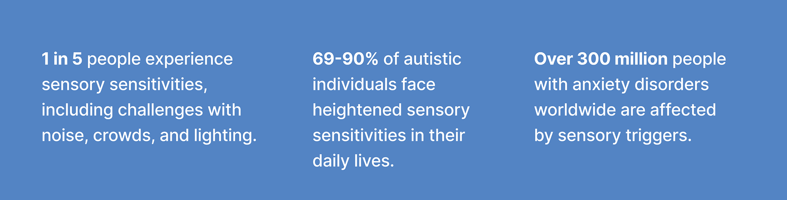
People navigating sensory overload are often forced to make decisions without the context they actually need. A place might be close by and highly rated, but still feel impossible to enter once noise, crowding, and unpredictability hit.
The problem wasn't navigation itself. It was the lack of sensory context before arrival.
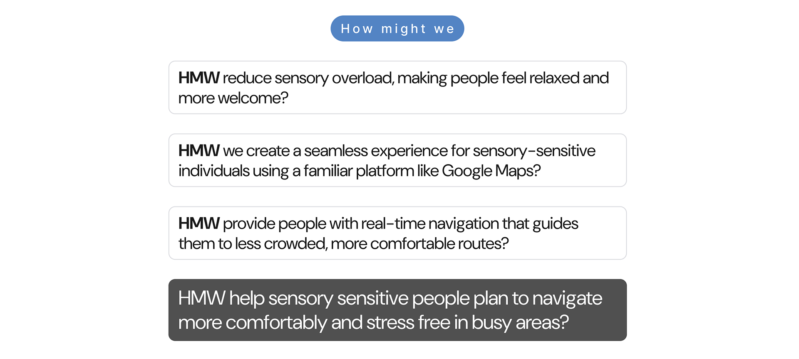
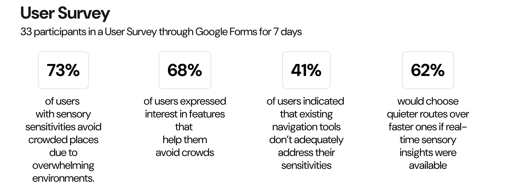
I ran a user survey with 33 participants over 7 days, then conducted in-depth interviews mapped through affinity diagrams. The data was consistent: people weren't asking for a different app. They were asking for the app they already trusted to understand them better.
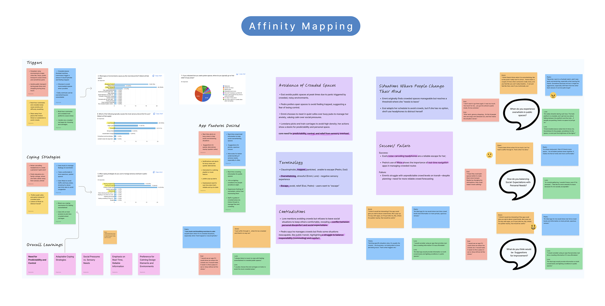
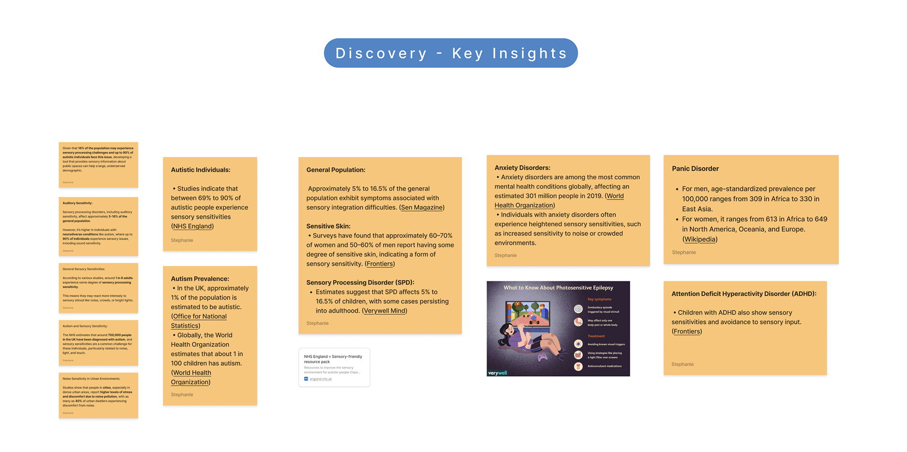
From the research, the opportunity became clearer: create a way for users to anticipate the sensory feel of a place, not just its location or opening hours.
The design challenge was to surface that information in a way that felt useful, calm, and native to Google Maps.
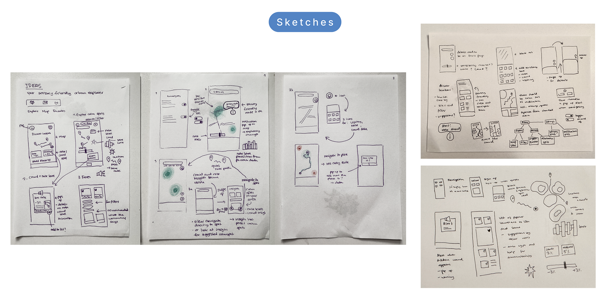
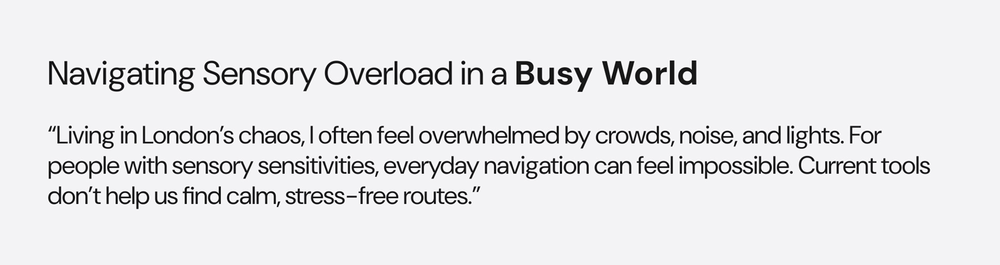
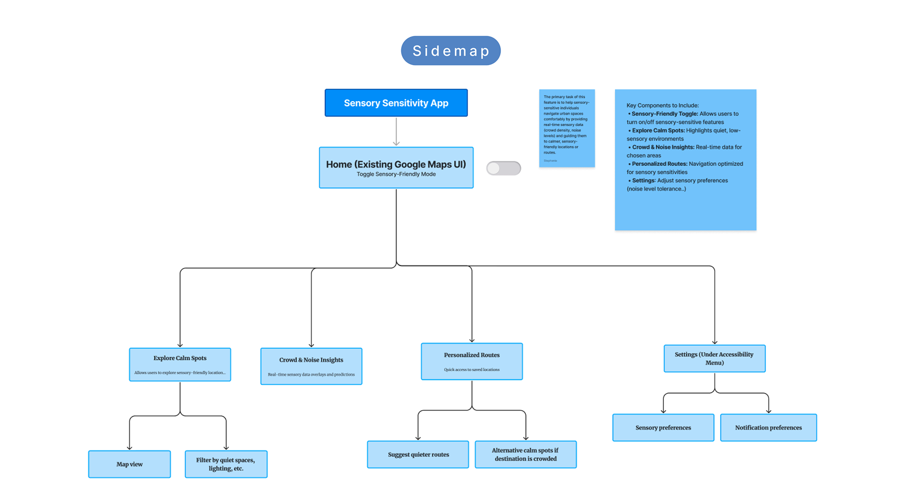
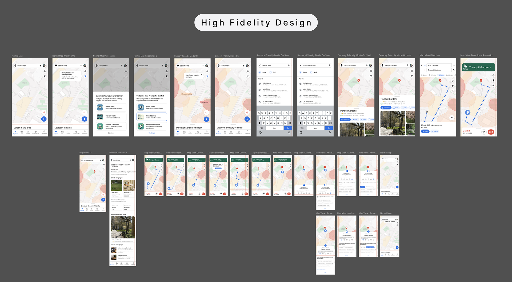
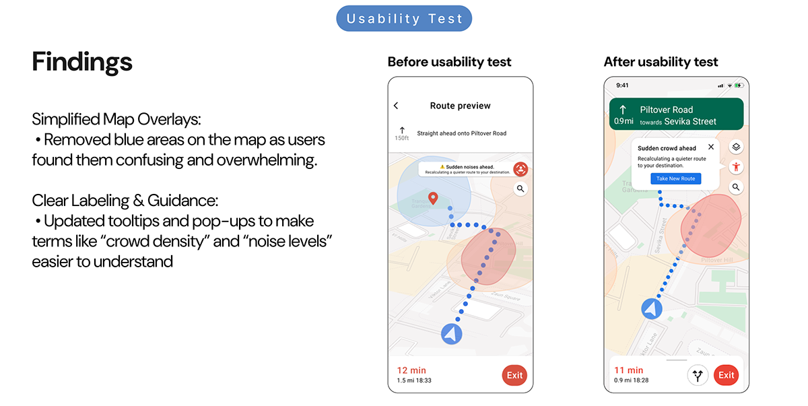
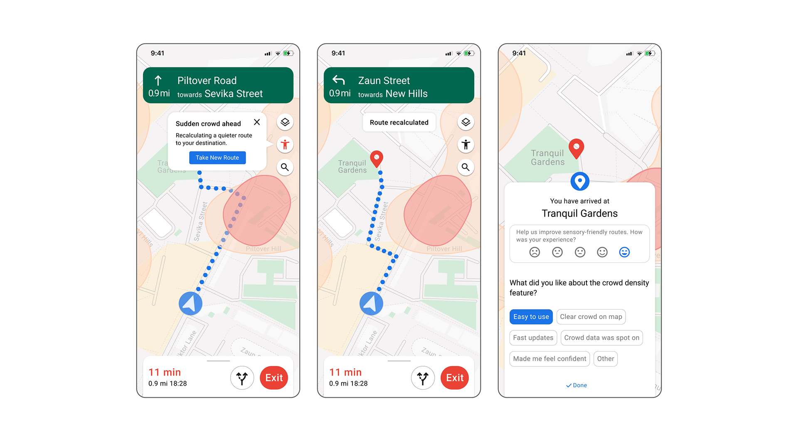
This project reinforced something simple: designing for sensory needs is not a niche exercise. It improves clarity, confidence, and comfort for everyone using the product.
Accessibility becomes stronger when it is woven into everyday decision-making, not treated as an add-on.
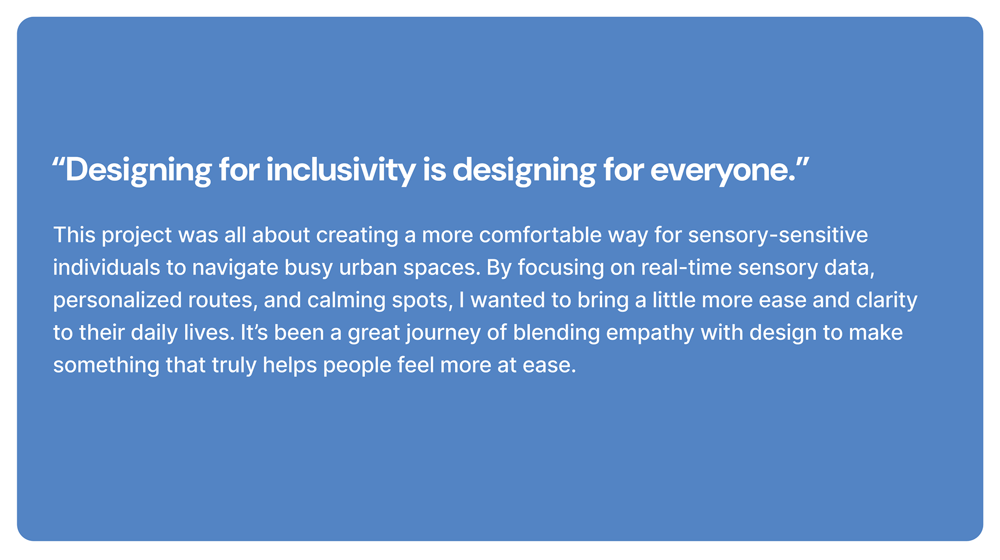